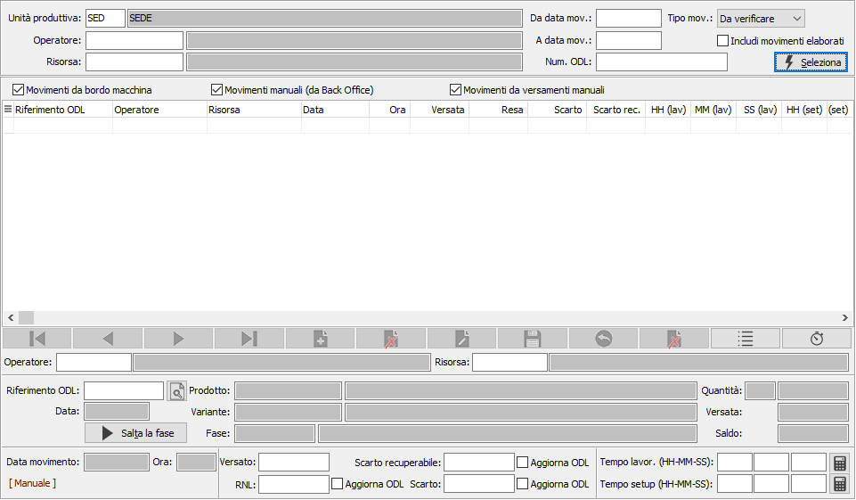
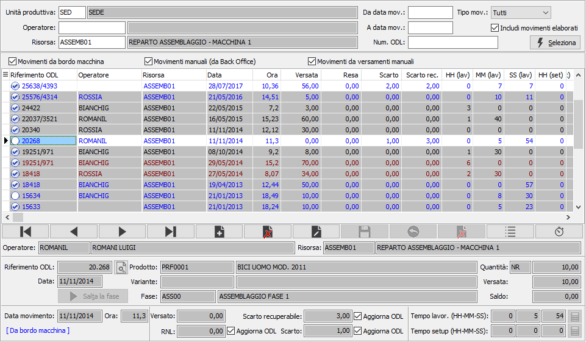
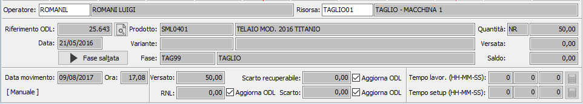
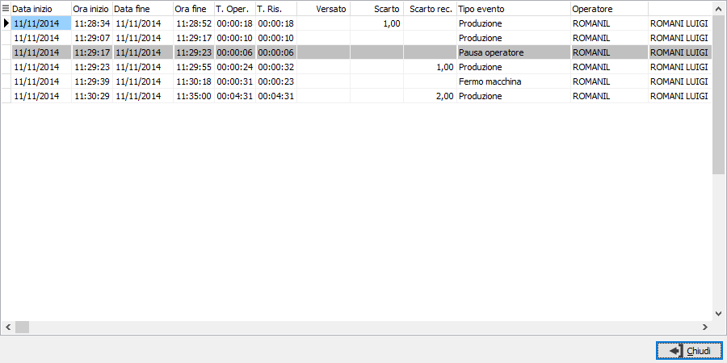
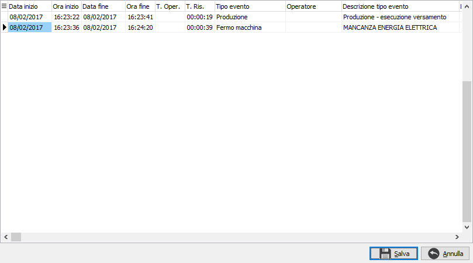

Gestione operazioni bordo macchina
La funzione consente sia di verificare ed eventualmente modificare i
movimenti inseriti in reparto, tramite un'applicazione specifica installata
su di un PC direttamente in reparto (OS1BMJob o OS1BordoMacchina), sia
di inserire manualmente nuovi movimenti (con modalità operative simili
a quelle della procedura utilizzata in reparto); da questi movimenti saranno
generati automaticamente i veri e propri movimenti di versamento analitici.
E’ tuttavia possibile far proseguire la fase di generazione versamenti
solo dopo l’effettiva autorizzazione effettuata manualmente da parte del
responsabile di produzione; questo tipo di controllo viene attivato dal
parametro “Verifica versamenti” presente nella configurazione “Produzione
– Impostazioni generali”. Se il parametro è attivo nella funzione è attiva
una casella combo (Tipo movimenti) per filtrare i movimenti da manutenere;
con il click destro del mouse sulla griglia dei risultati si accede ad
un menù di funzioni che consentono di autorizzare il movimento (o di togliere
l’autorizzazione); la stessa funzione è attiva con il doppio click che
accetta/nega la verifica.
La funzione, utilizzata tipicamente dal responsabile di produzione,
consente anche di registrare eventuali avanzamenti forzati di fase (ad
esempio nel caso in cui, per una volta, una fase non venga eseguita) che
non danno luogo ad addebito di tempi (e quindi di costi) attraverso il
bottone “Salta fase”.
Nei parametri viene richiesta l'unità produttiva con proposta l'unità
produttiva di default valida per l'utente connesso ad OS1; è possibile
solo scegliere l'unità produttiva, se gestite in configurazione le unità
produttive multiple; è richiesto di inserire l'operatore o la risorsa
in modo da poter filtrare i movimenti presenti, inoltre è possibile specificare
un numero specifico di ODL oppure un periodo specifico ed includere i
movimenti che hanno già generato versamenti definitivi e magazzino, spuntando
la casella "Includi movimenti elaborati".
Premendo il pulsante Seleziona si avvia l'elaborazione ed il risultato
viene visualizzato nella parte sottostante; per eseguire nuovamente una
selezione è necessario salvare eventuali modifiche o premere ESC oppure
il pulsante Annulla presente nella Toolbar.

I movimenti vengono riportati in colori differenti in modo da facilitarne
l'identificazione anche se nella parte bassa a sinistra è presente sempre
la descrizione dell'origine; se lo sfondo è grigio significa che il movimento
è già stato elaborato, cioè ha generato versamento effettivo e movimenti
di magazzino:
Blu:
movimenti derivanti dalla procedura bordo macchina presente in
reparto;
Nero:
movimenti inseriti manualmente dalla procedura stessa;
Marrone:
movimenti inseriti manualmente dalla procedura di Manutenzione
versamenti;
è inoltre presente,
in alto, una barra contenete delle caselle di spunta che consento di visualizzare
i movimenti di una o più tipologia semplicemente apponendo la spunta sulle
tipologie che si desidera visualizzare.

Dal pannello in basso si effettua l'effettiva gestione dei dati quale
inserimento di un nuovo movimento, variazione o cancellazione di un movimento
esistente; i dati presenti sono fondamentalmente quelli dell'ODL con in
più l'operatore, la risorsa obbligatoria, le possibili quantità (versato,
reso, scarti) di cui almeno una è richiesta obbligatoriamente e l'indicazione
dei tempi di lavorazione e setup.
In fase di inserimento di un movimento manuale è necessario indicare
l'operatore e la risorsa obbligatoriamente, viene proposto in automatico
il campo che è stato utilizzato come filtro (operatore o risorsa); successivamente
è necessario indicare il numero di ODL su cui deve essere effettuato versamento;
tramite il tasto  posto di fianco è possibile richiamare
una finestra di ricerca ODL. Specificato
l'ODL è necessario indicare almeno una delle quantità presenti, ogni quantità
inserita darà luogo ad un
posto di fianco è possibile richiamare
una finestra di ricerca ODL. Specificato
l'ODL è necessario indicare almeno una delle quantità presenti, ogni quantità
inserita darà luogo ad un  singolo
versamento. Per l'inserimento dei tempi di lavorazione e setup sono presenti
i campi che è possibile inserire manualmente o tramite il pulsante
singolo
versamento. Per l'inserimento dei tempi di lavorazione e setup sono presenti
i campi che è possibile inserire manualmente o tramite il pulsante  che accede alla finestra di calcolo dei tempi da cui è possibile effettuata
il calcolo dei tempi inserendo un periodo iniziale ed un periodo finale
e premendo Calcola; il calcolo viene rapportato tutto in ore, minuti e
secondi e riportato nei relativi campi sul movimento.
che accede alla finestra di calcolo dei tempi da cui è possibile effettuata
il calcolo dei tempi inserendo un periodo iniziale ed un periodo finale
e premendo Calcola; il calcolo viene rapportato tutto in ore, minuti e
secondi e riportato nei relativi campi sul movimento.
Il movimento fino a che non genera versamento effettivo
e movimenti di magazzino può essere richiamato e modificato; altrimenti
l'unico modo per intervenire è tramite il pulsante presente a lato, quello
più a destra, che di fatto elimina i versamenti generati ed i relativi
movimenti di magazzino, "riaprendo" il movimento e rendendolo
modificabile. Attenzione questa operazione è direttamente definitiva
e non è sottoposta al salvataggio generale.
E’ possibile in questa fase gestire anche la modalità di comportamento
da adottare nel caso in cui dalla fase rientri una quantità scartata o
resa non lavorata (attraverso il flag Aggiorna ODL). Al verificarsi di
questo evento la fase successiva avrebbe in ingresso una quantità inferiore
a quella prevista quindi se si intende lasciare non aggiornato l’ODL per
un successivo versamento che vada a coprire la quantità mancante è sufficiente
deselezionare la casella Aggiorna ODL.
La
funzione, utilizzata tipicamente dal responsabile di produzione, consente
anche di registrare eventuali avanzamenti forzati di fase (ad esempio
nel caso in cui, per una volta, una fase non venga eseguita) che non danno
luogo ad addebito di tempi (e quindi di costi) attraverso il bottone “Salta
fase”; premendo questo pulsante di fatto si rende interamente versato
con i tempi azzerati e non modificabile il movimento. Il pulsante è utilizzabile
solo se per la fase non è mai stato effettuato nessun versamento. è possibile sbloccare il
movimento premendo lo stesso pulsante che diventa Fase saltata tornando
alle condizioni di inserimento.



Tramite
questo pulsante è possibile analizzare il dettaglio del movimento, se
presente, derivato dalla generazione dei movimenti
bordo macchina provenienti dal consolidamento degli eventi inseriti
tramite l'applicazione OS1BMJob presente in reparto;gli eventi consolidati
generano i movimenti bordo macchina se è presente almeno una quantità
versata.

Tramite
questo pulsante è possibile assegnare al movimento corrente eventi provenienti
dal consolidamento degli eventi inseriti
tramite l'applicazione OS1BMJob presente in reparto; eventuali eventi
chiusi dopo che è stato generato il movimento di bordo macchina possono
essere abbinati all’ODL di riferimento; è sufficiente selezionare gli
eventi da associare e premere il pulsante Salva.
Al momento del salvataggio, premendo il pulsante Salva presente nella
Toolbar o il tasto funzione
F10, saranno registrati i nuovi movimenti inseriti e le eventuali variazioni
apportate; se previsto in configurazione sarà richiesto se effettuare
direttamente la generazione dei versamenti.